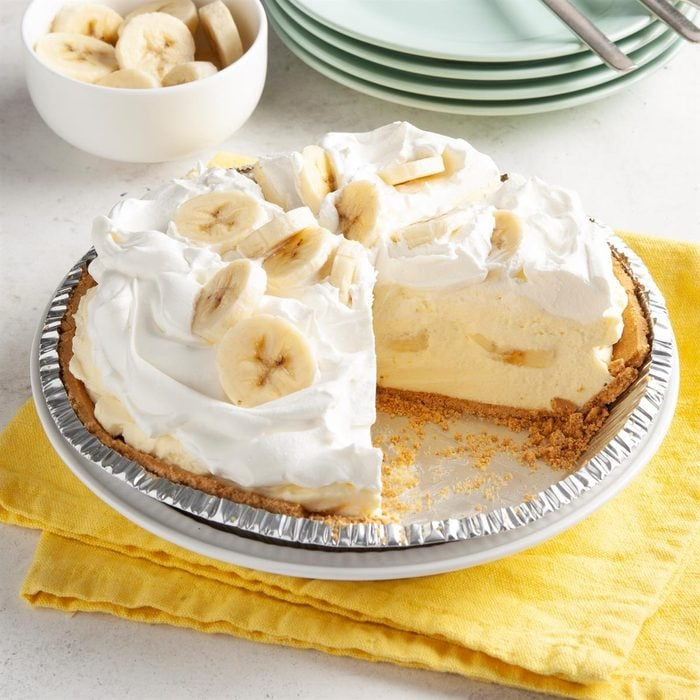

BANANA CREAM PIE

Description
This creamy pie conjures up our favorite vintage dessert recipes. Of course,
conveniences like store-bought pie crust and pudding mix make
it far quicker than in the good old days (but just as tasty).
Ingredients
- 1 cup cold 2% milk
- 1 package (3.4 ounces) instant vanilla pudding mix
- 1/2 teaspoon vanilla extract
- 1 carton (12 ounces) frozen whipped topping, thawed, divided
- 1 graham cracker crust (9 inches)
- 2 medium firm bananas, sliced
- Additional banana slices, optional
Directions
- In a large bowl, whisk milk, pudding mix and vanilla for 2 minutes (mixture will be thick).
Fold in 3 cups whipped topping.
- Pour 1-1/3 cups pudding mixture into pie crust. Layer with banana slices and remaining pudding mixture.
- Top with remaining whipped topping. If desired, garnish with additional banana slices. Refrigerate until serving.
- Your Dessert is ready!